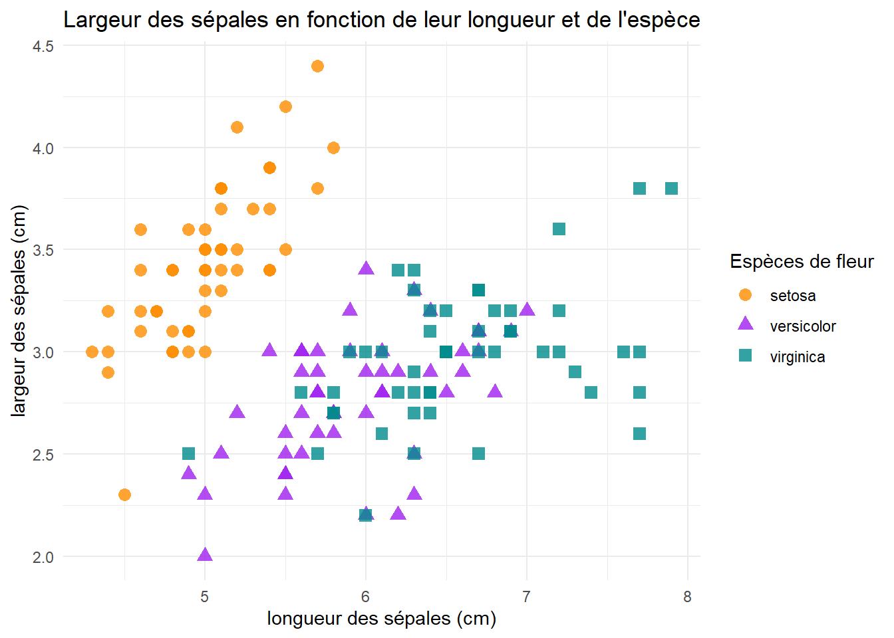

permet de combiner du texte, du code et des résultats d’analyses (e.g. ggplots)
différents formats de documents possible (articles, présentations, websites, livres, blogs…)
=> Très proche de R markdown
Mais plus grande flexibilité sur les formats de document possibles, les langages de programmation utilisables (notamment Python). Peut également être utilisé sur d’autres éditeurs de code (e.g. VS Code). Quelques fonctionnalités supplémentaires
1.1 Installation et mise en place
Téléchargement et installation du logiciel sur https://quarto.org/
Possibilité d’ouvrir un document Quarto (comme un doc Rmd) directement dans RStudio
2 Demonstration
2.1 Chargement des pcks et des données
Utilisation du fameux dataset iris
Un choix conservateur il faut l’admettre
Ouvrir pour informations supplémentaires
Utilisation uniquement à des fins de démonstration
Exemple d’une note qui doit être ouverte pour y accéder.
Premièrement, il faut :
charger les librairies
lire les données
Vérifier que les données sont au bon format
Au bon format signifie que les données sont prêtes pour être utilisées et analysées
correlations entre longueur et largeur des pétales
de manière générale
en fonction de l’espèce
correlations entre longueur et largeur des sépales
de manière générale
en fonction de l’espèce
Liens entre sépales et pétales
de manière générale
en fonction de l’espèce
2.5 Longueur et larger des pétales
Code
longxlargxpetale <-ggplot(data = data, aes(x = Petal.Length, y = Petal.Width)) +geom_point(size =3,alpha =0.8) +theme_minimal() +labs(title ="Largeur des pétales en fonction de leur longueur", x ="longueur des pétales (cm)", y ="largeur des pétales (cm)")longxlargxpetale
Figure 3: Pental length and petal width
Voir Figure 2 pour une explication sur les mesures
2.5.1 Séparation par espèces
Code
longxlargxpetale_byspecies <-ggplot(data = data, aes(x = Petal.Length, y = Petal.Width)) +geom_point(aes(color = Species, shape = Species), size =3,alpha =0.8) +scale_color_manual(values =c("darkorange","purple","cyan4")) +theme_minimal() +labs(title ="Largeur des pétales en fonction de leur longueur et de l'espèce", x ="longueur des pétales (cm)", y ="largeur des pétales (cm)", color="Espèces de fleur", shape="Espèces de fleur")longxlargxpetale_byspecies
Figure 4: Pental length and petal width by species
longxlargxsepale_byspecies <-ggplot(data = data, aes(x = Sepal.Length, y = Sepal.Width)) +geom_point(aes(color = Species, shape = Species), size =3,alpha =0.8) +scale_color_manual(values =c("darkorange","purple","cyan4")) +theme_minimal() +labs(title ="Largeur des sépales en fonction de leur longueur et de l'espèce", x ="longueur des sépales (cm)", y ="largeur des sépales (cm)", color="Espèces de fleur", shape="Espèces de fleur")longxlargxsepale_byspecies

Figure 5: Sepal length and petal width by species
Code
longxlargxsepale <-ggplot(data = data, aes(x = Sepal.Length, y = Sepal.Width)) +geom_point(size =3,alpha =0.8) +theme_minimal() +labs(title ="Largeur des sépales en fonction de leur longueur", x ="longueur des sépales (cm)", y ="largeur des sépales (cm)")longxlargxsepale
Figure 6: Sepal length and petal width
References
Derksen, M., & Morawski, J. (2022). Kinds of Replication: Examining the Meanings of “ConceptualReplication” and “DirectReplication.”Perspectives on Psychological Science, 174569162110411. https://doi.org/10.1177/17456916211041116
Epskamp, S. (2019). Reproducibility and Replicability in a Fast-PacedMethodologicalWorld. Advances in Methods and Practices in Psychological Science, 2(2), 145–155. https://doi.org/10.1177/2515245919847421